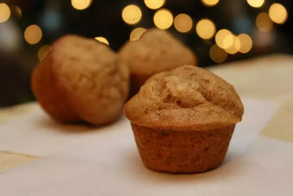

Sweet potato muffins!

Description
If you're looking for a muffin recipe that's nutritious and requires less sugar than most other muffin recipes, this is the one for you!
Because of the natural sweetness of the potatoes, you don't need a ton of sugar to make these muffins flavorful. The sweet potatoes also give this recipe a really moist texture.
Ingredients
- 1 cup white sugar and 1 cup cooked, mashed sweet potato
- ½ cup olive oil and ⅓ cup water
- 2 eggs, beaten and 1 ⅔ cups all-purpose flour
- 1 teaspoon ground cinnamon and 1 teaspoon baking soda
- ½ teaspoon baking powder and ½ teaspoon salt
- ½ cup chopped pecans
Instructions
- Preheat the oven to 350 degrees F (175 degrees C). Grease a 12-cup muffin pan or line with paper liners.
- Combine sugar, sweet potato, olive oil, water, and eggs in a bowl. Combine flour, cinnamon, baking soda, baking powder, and salt in a second bowl. Add flour mixture and pecans to the sweet potato mixture. Fold gently until just moistened, being careful not to overmix. Spoon batter into the prepared muffin cups, filling each 3/4 full.
- Bake in the preheated oven until a toothpick inserted into the center comes out clean, 20 to 25 minutes. Do not overbake. Remove from oven and cool on wire rack.
Back to top of the package
Back to home